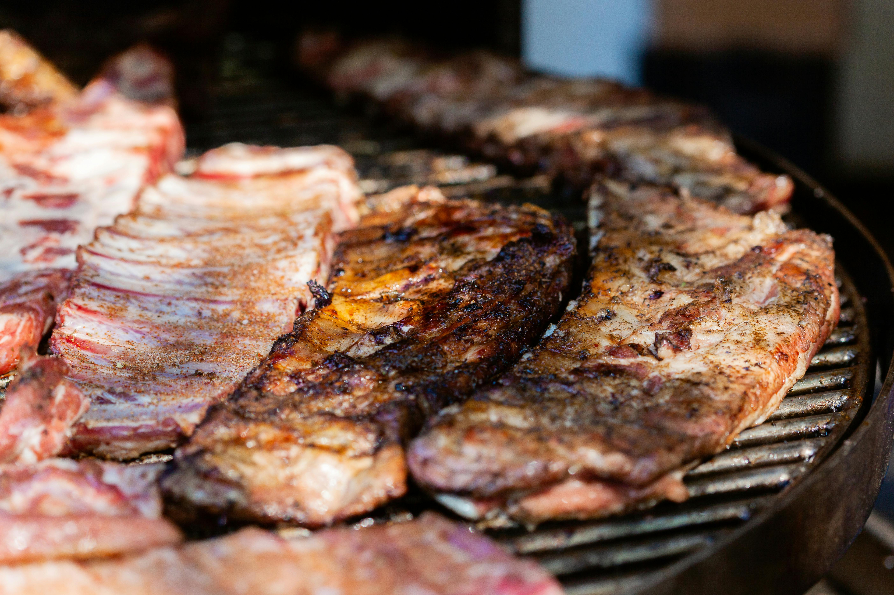

Ribs Recipe

Ingredients
- 4 pounds baby back pork ribs
- ⅔ cup water
- ⅓ cup red wine vinegar
- 1 cup ketchup
- 1 cup water
- ½ cup cider vinegar
- ⅓ cup Worcestershire sauce
- ¼ cup prepared mustard
- 4 tbs butter
- ½ cup packed brown sugar
- 1 tsp hot pepper sauce
- ⅛ tsp salt
Instructions
- Preheat the oven to 350°F(175°C). Place ribs in two 10x15-inch roasting pans. Pour ⅔ cup water and red wine vinegar into a bowl; stir to mix. Pour diluted vinegar over ribs and cover with foil. Bake in the preheated oven for 45 minutes. Baste the ribs with juices halfway through cooking.
- To make the BBQ sauce: Mix ketchup, 1 cup water, cider vinegar, Worcestershire sauce, mustard, butter, brown sugar, hot pepper sauce, and salt together in a medium saucepan; bring to a boil. Reduce heat to low, cover, and simmer for 1 hour.
- Preheat grill for medium heat.
- Lightly oil preheated grill. Transfer ribs from the oven to the grill, discarding cooking liquid. Grill over medium heat for 15 minutes, turning ribs once. Baste ribs generously with BBQ sauce, and grill 8 minutes. Turn ribs, baste again with BBQ sauce, and grill 8 minutes.